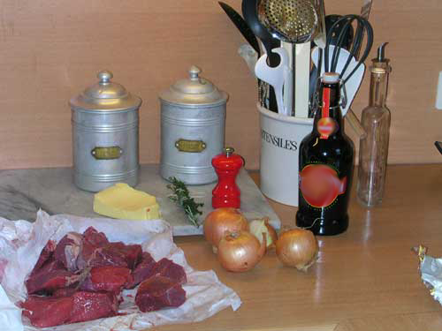

<h1>Culinary - fillestar - M1 - Simple recipe: omelette</h1>
<figure class="photo"></figure>


<ul>
<li>Step 1: beat 3 eggs with salt</li>
<li>Step 2: heat the pan with 10 g butter</li>
<li>Step 3: cook over medium heat 2-3 min</li>
<li>Step 4: fold and serve</li>
<li data-aoi="kritike" data-critical="true">Portion: 1</li>
</ul>
